The brief
Make the Rubatà the star of aperitivo at home, and a gift that stands out.
For 25 to 40 year-olds
Deliver a 20–30 s spot, social, web and print
HTML export of the Track 2 pitch deck, version 1, with speaker notes under each slide. Dashed boxes and text in [brackets] are placeholders to fill in after production.
Keys: → ↓ Space next slide, ← ↑ previous, Home End first and last, P presentation mode (one slide per screen, no notes), F full screen, Esc back to this view.
Slide 1 of 10
It breaks. It’s shared.
Team Macario · Track 2, GenAI for marketing · Feyles Rubatà
Speaker notes: Before this slide appears: snap a real Rubatà in front of the microphone. Pause. Then, in English: “In Italian, dividere means two things: to break, and to share.” Say the Italian word, then both English meanings. Show the claim.
Slide 2 of 10
The brief
For 25 to 40 year-olds
Deliver a 20–30 s spot, social, web and print
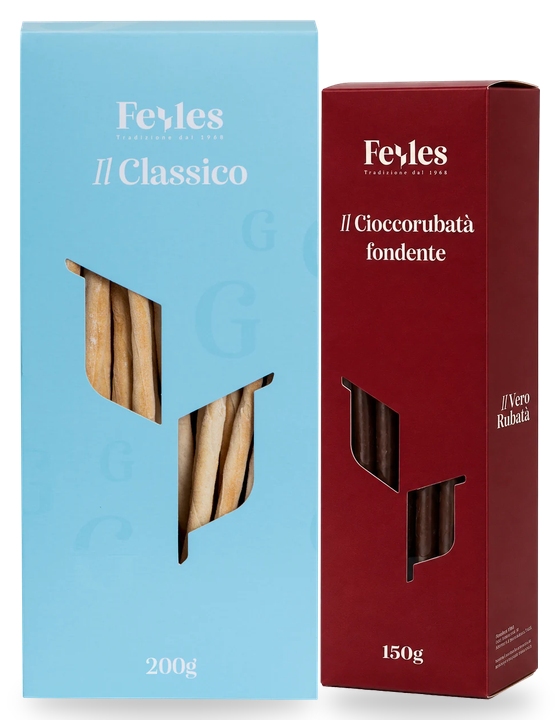
Speaker notes: Feyles makes Rubatà, the knobbly rolled breadsticks of Piedmont, in Cambiano since 1968. The brief: make the grissino the star of aperitivo at home and a gift idea, for 25 to 40 year-olds, with a 20 to 30 second spot, social, web and print visuals. The trap: explaining “sharing” with words, or showing a generic aperitivo where the product is a prop.
Slide 3 of 10
The idea
to break
to share
One gesture does both.
Speaker notes: A Rubatà does both meanings of «dividere» in one gesture: snap it in half, and you are already handing the other half to someone. So we don’t explain sharing: we show the snap. One becomes two. It uses all three things the brief asked for: the shape, the crunch, the act of sharing. [Optional: replace the split background with the photo of a snapped Rubatà across the two halves.]
Slide 4 of 10
The spot
[Switch to the spot file, full screen with sound, then come back]
Every shot, voice and sound in the spot made with AI.
The
pack and the logo are the real ones.
Speaker notes: Say only: “The voiceover is in Italian, the language of the people we are selling to. 30 seconds: a Christmas story, from 1968 to today.” Switch to the spot file playing full screen from the laptop (VLC or QuickTime), not streamed. Don’t talk over it. Come back and click once to show the caption, then say it: every shot, voice and sound in the spot is AI-generated; the pack and the logo are the real ones.
Slide 5 of 10
Out in the world · Mockups
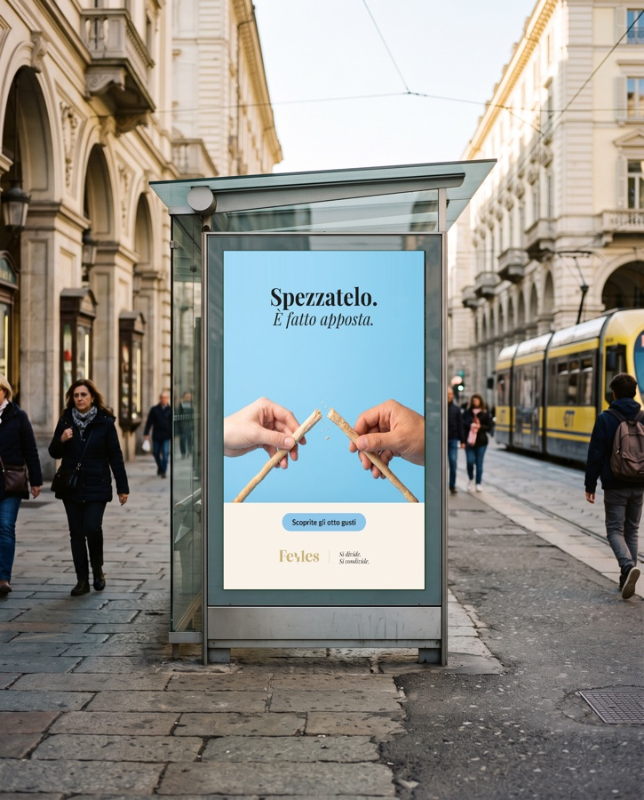
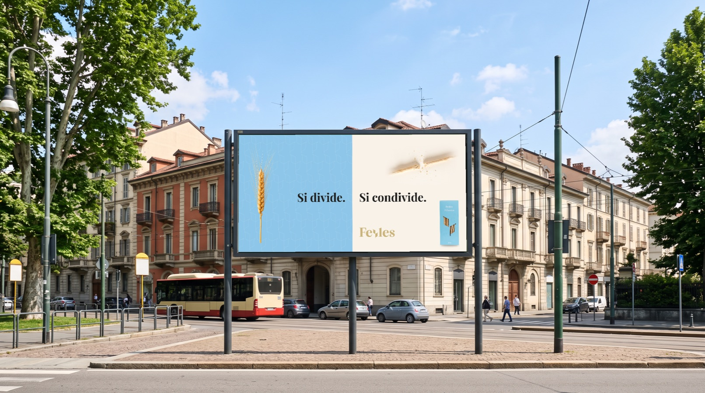
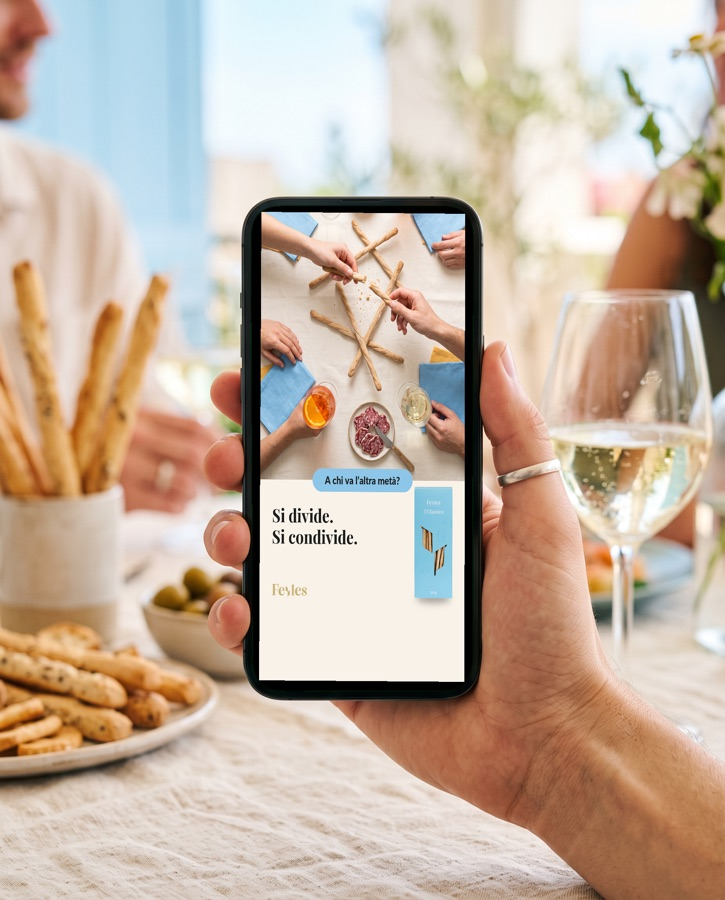
Speaker notes: Ten seconds, right after the spot. Say only: “This is where it lives: a bus shelter in Turin, a billboard, a story on your phone.” Then move to the full set.
Slide 6 of 10
The campaign · 80 files · Ads · Social · Web · Print
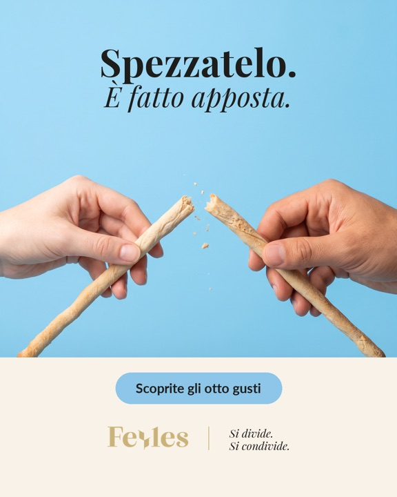
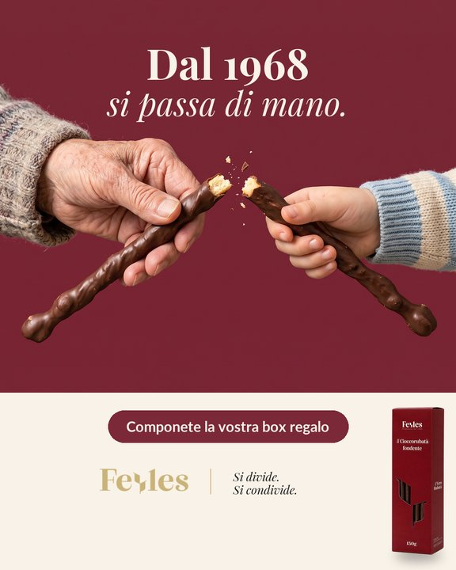
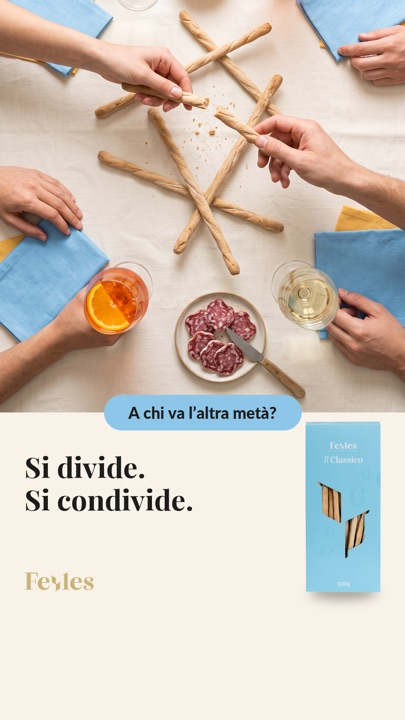
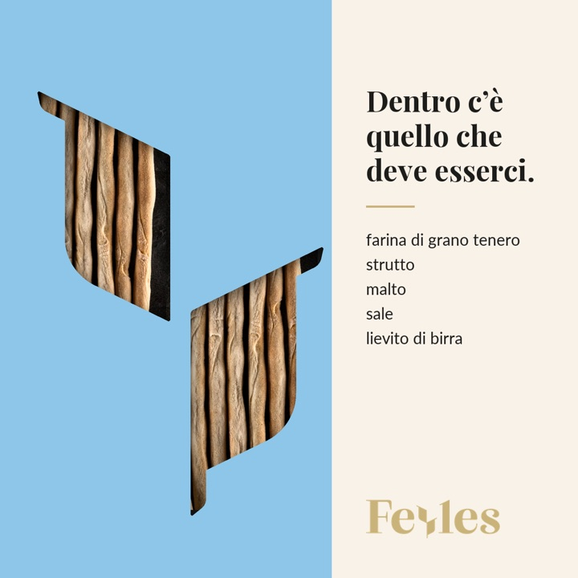
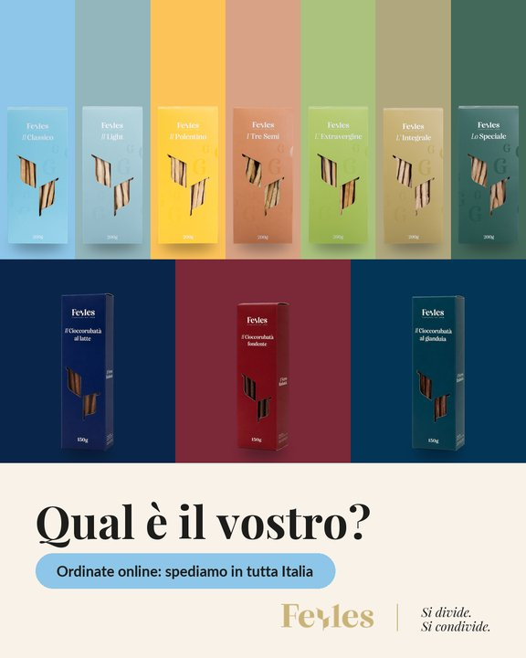
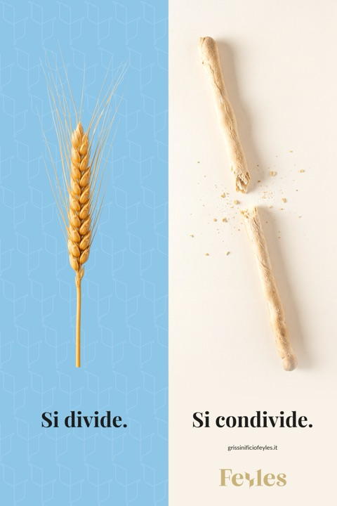
Speaker notes: One look across every channel: daylight, flat colours taken from the pack, layouts split in two halves like the snap. 80 files from two scripts: the year-round set and its Christmas edition with the Cioccorubatà, so a copy change rebuilds everything in under a minute. Walk the grid quickly. Read one headline in Italian and give its English («Spezzatelo. È fatto apposta.»: “Break it. It’s made for that.”), then move on: don’t translate them all.
Slide 7 of 10
How we made it
STEP 1
Real pack photos
References for every image
STEP 2
AI images and clips
Nano Banana 2 and Google Veo 3.1 on Vertex AI, with real snap sounds
STEP 3
AI voice
ElevenLabs: Italian voiceover, music and sound effects
STEP 4
Post-production
Real logo, claim and CTA composited with Python, never generated
Rules we gave the AI: knobbly Rubatà only · no hands shaping dough · no generated text or logo · only facts from the client kit
Speaker notes: Walk the four steps: Nano Banana 2 for keyframes and plates, Veo 3.1 for the clips, ElevenLabs for voice, music and effects, Gemini as a quality check, then FFmpeg, HyperFrames and Pillow for the edit and compositing. Then one honest example of a problem and how we solved it: [to fill in after production, for example a warped pack replaced with the real photo].
Slide 8 of 10
Beyond the prototype
Same layout, same claim, one spot per flavour.
«A chi va l’altra metà?» invites people to post their own snap.
The Christmas edition: same pipeline, new season, new product.
Written in the brand’s own tone of voice, with its approved calls to action.
Speaker notes: What we would do next for Feyles: one spot per flavour and the friend-tag challenge on social. The Christmas edition shows how cheap a new season is: same pipeline, new plates, new headlines.
Slide 9 of 10
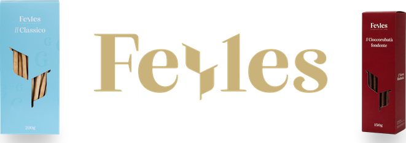
Uno diventa due. One becomes two.
Scoprite gli otto gusti · grissinificiofeyles.it
Team Macario: Gianpaolo Macario · Alessio Chessa · Luca Frigato
Speaker notes: Snap a second Rubatà; hand half to a juror if it feels right. “One becomes two. That is the whole campaign.” Thank the jury and invite questions.
Slide 10 of 10
Backup · for questions
30 s
spot length
2
campaigns: year-round and Christmas
80
static files: ads, social, web, print
10 × 3
social concepts × formats
< 1 min
to rebuild every static file
25
AI images generated for the static set
12
kept as plates and mockup scenes
0
pack texts or logos drawn by the AI
Speaker notes: Show only if a question needs it. The spot comes in 16:9 and 9:16; the static set in 9:16, 4:5 and 1:1 plus web and print sizes. The 25 images are Nano Banana 2 drafts and finals: 12 kept, the rest rejected (warped sticks, a spiralled chocolate Rubatà, sticks too thick). Every pack, logo and line of text comes from the client kit.